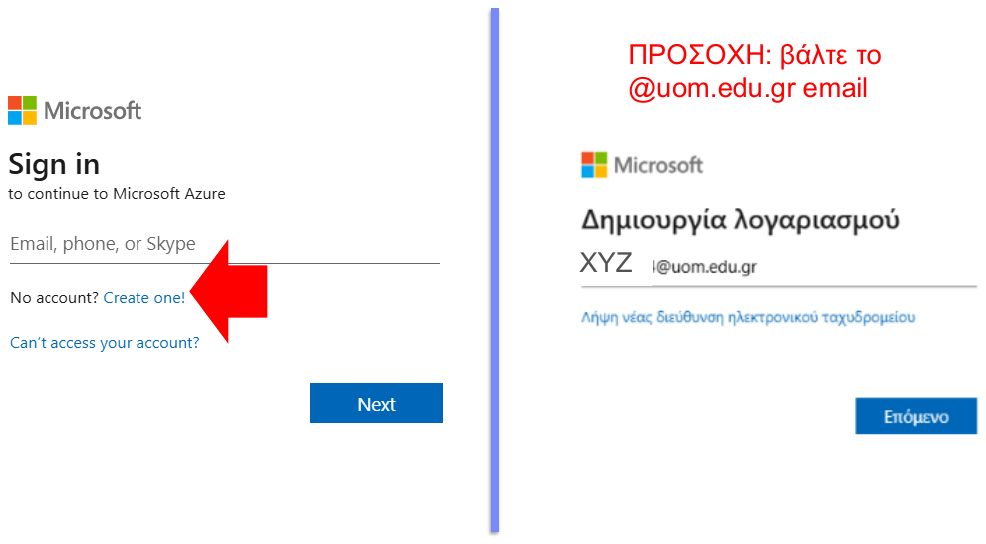
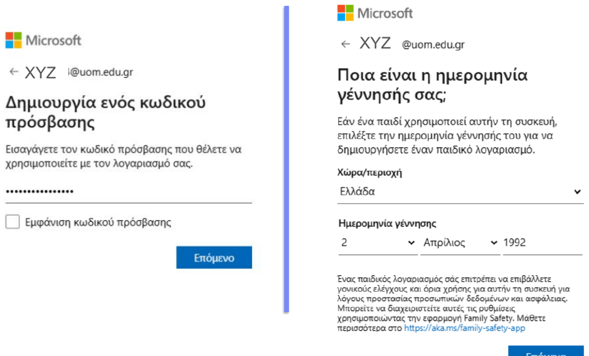
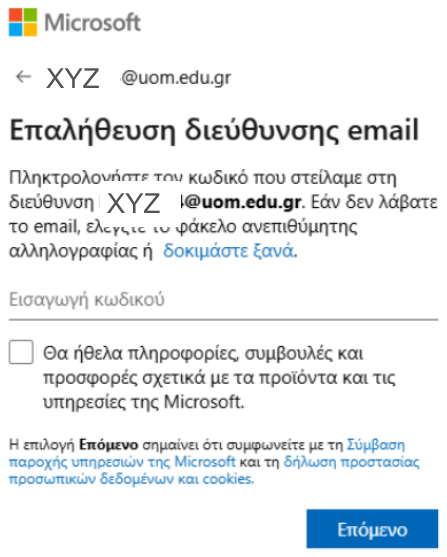
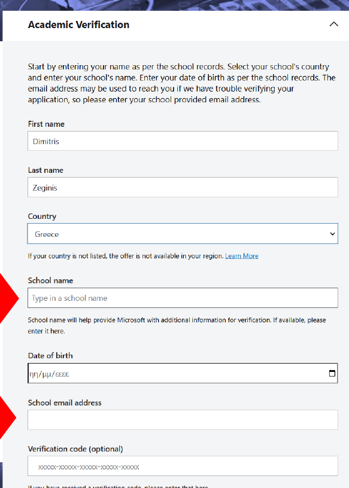
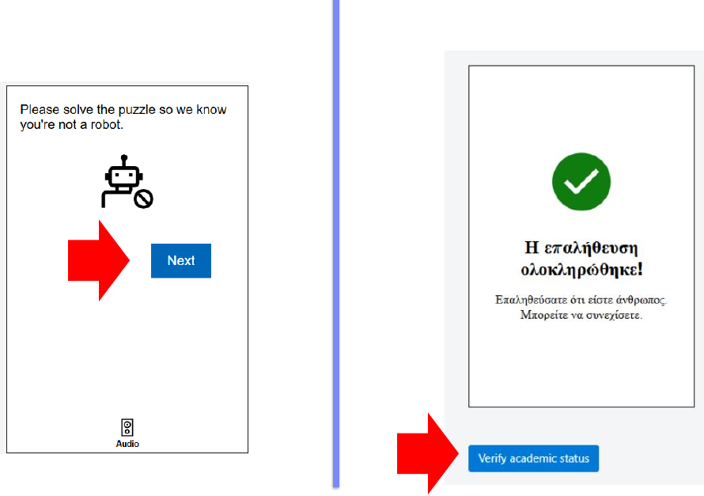
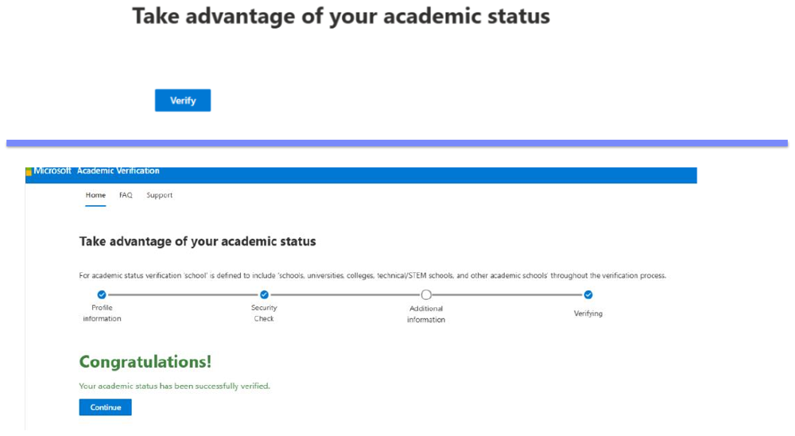
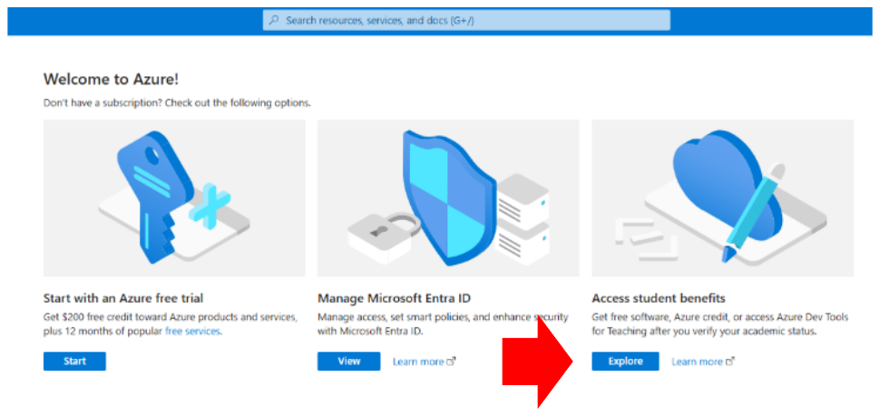
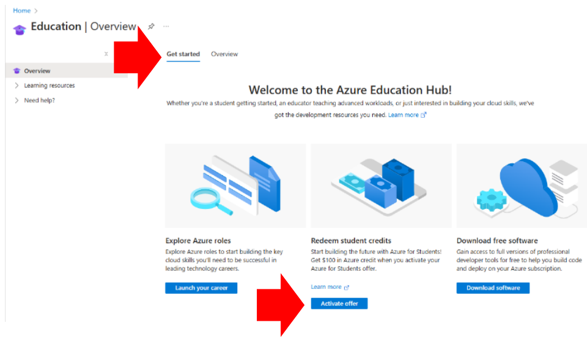
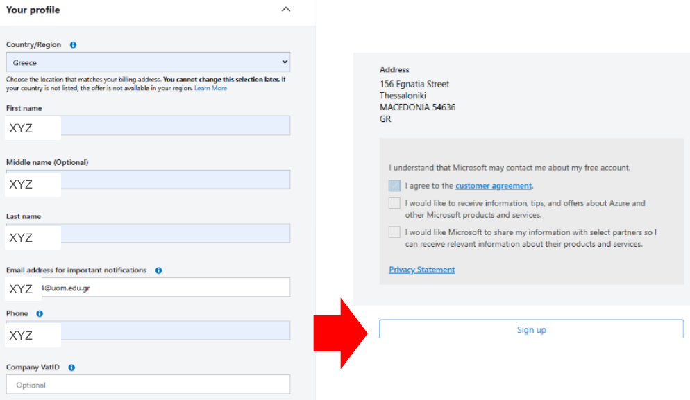
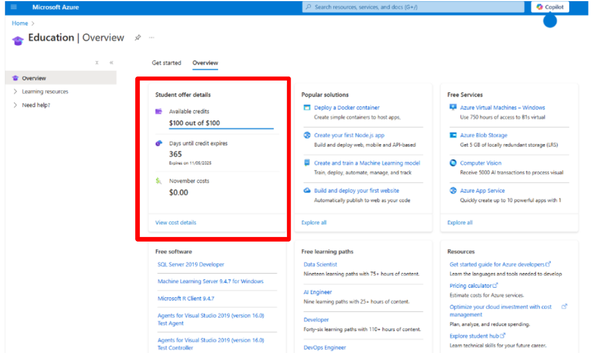

Από τον λογαριασμό στο Azure μέχρι ένα λειτουργικό ηλεκτρονικό κατάστημα με PrestaShop, σε 8 βήματα. Τα βήματα 1–6 στήνουν την υποδομή (λογαριασμός, credits, εικονική μηχανή, εγκατάσταση)· τα βήματα 7–8 είναι η ίδια η εργασία: τι φτιάχνεις μέσα στο κατάστημα και τι παραδίδεις. Η πρόοδός σου στις λίστες ελέγχου αποθηκεύεται στον browser.
1. Λογαριασμός Microsoft με το πανεπιστημιακό email
Όλα ξεκινούν από έναν λογαριασμό Microsoft που είναι δεμένος με το @uom.edu.gr email σου. Αυτό είναι που αποδεικνύει αργότερα ότι είσαι φοιτητής και ξεκλειδώνει τα δωρεάν credits. Αν έχεις ήδη λογαριασμό Microsoft με προσωπικό email (Gmail, Outlook), μην τον χρησιμοποιήσεις: φτιάξε καινούργιο με το πανεπιστημιακό.
Δώσε το @uom.edu.gr email σου, όρισε κωδικό πρόσβασης, χώρα Ελλάδα και ημερομηνία γέννησης.
Η Microsoft στέλνει κωδικό επαλήθευσης στο πανεπιστημιακό email. Αν δεν τον δεις σε λίγα λεπτά, έλεγξε την ανεπιθύμητη αλληλογραφία στο webmail του πανεπιστημίου.

«No account? Create one!» και μετά το @uom.edu.gr email

Κωδικός πρόσβασης, χώρα και ημερομηνία γέννησης

Ο κωδικός επαλήθευσης έρχεται στο @uom.edu.gr
ΠΡΟΣΟΧΗΧρησιμοποίησε παντού το ίδιο @uom.edu.gr email: στον λογαριασμό Microsoft, στην ακαδημαϊκή επαλήθευση και στο προφίλ του Azure. Αν τα μπερδέψεις, η προσφορά για φοιτητές δεν ενεργοποιείται.
2. Ακαδημαϊκή επαλήθευση (academic verification)
Η Microsoft πρέπει να επιβεβαιώσει ότι είσαι φοιτητής σε αναγνωρισμένο ίδρυμα. Η διαδικασία γίνεται μία φορά και ισχύει για έναν χρόνο· μετά ανανεώνεται όσο είσαι ενεργός φοιτητής.
Στη φόρμα Academic Verification συμπλήρωσε όνομα και επώνυμο όπως στα μητρώα του πανεπιστημίου, χώρα Greece, και στο School name University of Macedonia (Πανεπιστήμιο Μακεδονίας, Θεσσαλονίκη).
Στο School email address βάλε ξανά το @uom.edu.gr email. Το πεδίο Verification code είναι προαιρετικό, άφησέ το κενό.
Λύσε το puzzle «δεν είμαι ρομπότ» και πάτησε Verify academic status. Θα λάβεις email από το Microsoft Academic Verification Team με σύνδεσμο επιβεβαίωσης, που λήγει σε 5 ημέρες.
Μόλις δεις το Congratulations! Your academic status has been successfully verified, πάτησε Continue.

Η φόρμα: ίδρυμα «University of Macedonia», email @uom.edu.gr

Puzzle και «Verify academic status»

Η επιβεβαίωση
ΑΝ ΚΟΛΛΗΣΕΙΑν η επαλήθευση δεν περάσει αυτόματα, η Microsoft μπορεί να ζητήσει έγγραφο (π.χ. βεβαίωση φοίτησης ή φοιτητική ταυτότητα). Ανέβασέ το από το ίδιο σημείο· παίρνει συνήθως 1–3 εργάσιμες.
3. Τα 100 $ του Azure for Students
Το Azure for Students δίνει 100 $ σε credits για έναν χρόνο, χωρίς πιστωτική κάρτα, και περιλαμβάνει δωρεάν ποσότητες για μερικές υπηρεσίες. Τα credits είναι η «τράπεζά» σου για την εργασία: η εικονική μηχανή που θα φτιάξεις χρεώνεται από εκεί, γι' αυτό στο βήμα 6 θα δεις πώς να μην τα ξοδέψεις άσκοπα.
Μπες στο portal.azure.com με τον λογαριασμό σου. Στην οθόνη «Welcome to Azure» πάτησε Explore κάτω από το Access student benefits.
Αν σου ζητηθεί, αποδέξου τους όρους του Azure Dev Tools for Teaching (Accept and continue).
Στο Education › Get started πάτησε Activate offer στο «Redeem student credits». Συμπλήρωσε το προφίλ: Country Greece, όνομα, επώνυμο, το @uom.edu.gr email, τηλέφωνο· το VAT ID το αφήνεις κενό. Αποδέξου το customer agreement και πάτησε Sign up.
Μπορεί να ζητηθεί μία ακόμη επαλήθευση ταυτότητας με κωδικό στο email. Στο τέλος, στο Education › Overview, θα δεις Available credits: $100 out of $100. Αυτή η οθόνη είναι και ο τρόπος να παρακολουθείς πόσα έχουν μείνει.

«Access student benefits › Explore»

Education › Get started › «Activate offer»

Το προφίλ και το «Sign up»

Education › Overview: τα διαθέσιμα credits
ΓΙΑΤΙ ΟΧΙ GOOGLE CLOUD;Μπορείς να κάνεις την εργασία και σε Google Cloud (το σκριπτ του βήματος 5 τρέχει αυτούσιο). Η δωρεάν δοκιμή της Google όμως ζητά πιστωτική κάρτα, ενώ το Azure for Students όχι· γι' αυτό ο οδηγός ακολουθεί το Azure.
4. Η εικονική μηχανή (virtual machine)
Εδώ δένει η Εβδομάδα 3 με την πράξη: νοικιάζεις μία εικονική μηχανή (IaaS) σε data center της Microsoft και μέσα της θα τρέξει το e-shop. Θέλεις το φθηνότερο μέγεθος που αντέχει το PrestaShop 9: 2 GB μνήμης. Το 1 GB δεν φτάνει.
Στο portal: Create a resource › Virtual machine › Create (ή αναζήτηση «Virtual machines» › Create).
Στην καρτέλα Basics συμπλήρωσε τα παρακάτω και άφησε τα υπόλοιπα όπως είναι:
Subscription
Azure for Students
Resource group
Create new → eshop-rg
Virtual machine name
eshop
Region
(Europe) North Europe ή West Europe
Availability options
No infrastructure redundancy required
Image
Ubuntu Server 24.04 LTS – x64 Gen2
Size
Standard_B1ms (1 vcpu, 2 GiB) · «See all sizes» αν δεν φαίνεται
Authentication type
SSH public key, Generate new key pair (ή Password· δεν θα το χρειαστείς)
Username
azureuser
Public inbound ports
Allow selected ports → HTTP (80) και SSH (22)
Πάτησε Review + create και μετά Create. Αν διάλεξες SSH key, πάτησε Download private key and create resource και κράτησε το αρχείο.
Μετά από 1–2 λεπτά: Go to resource. Στην οθόνη της VM σημείωσε τη Public IP address (π.χ. 52.158.34.20). Αυτή είναι η διεύθυνση του καταστήματός σου.
Έλεγξε ότι η θύρα 80 είναι ανοιχτή: Networking › Network settings › στους inbound rules πρέπει να υπάρχει κανόνας για HTTP (80). Αν όχι, Create port rule › Inbound, Service: HTTP.
ΤΙ ΚΟΣΤΙΖΕΙΗ B1ms κοστίζει περίπου 0,02 $ την ώρα, δηλαδή γύρω στα 15 $ τον μήνα αν μένει συνέχεια ανοιχτή, συν 1–2 $ για δίσκο και IP. Με 100 $ credits έχεις άνετα όλο το εξάμηνο, αρκεί να τη σταματάς όταν δεν δουλεύεις (βήμα 6).
5. Εγκατάσταση PrestaShop με ένα σκριπτ
Δεν χρειάζεται να συνδεθείς με SSH. Το Azure έχει το Run command: του δίνεις ένα σκριπτ και το τρέχει μέσα στη μηχανή. Το σκριπτ εγκαθιστά το Docker, κατεβάζει το επίσημο PrestaShop 9 μαζί με τη βάση δεδομένων του και τα ξεκινά. Μετά το κατάστημα είναι έτοιμο, όπως ακριβώς το demo της Εβδομάδας 4, αλλά δικό σου.
Αντέγραψε το σκριπτ από κάτω (κουμπί Αντιγραφή) και επικόλλησέ το σε έναν επεξεργαστή κειμένου.
Άλλαξε τις δύο πρώτες γραμμές: το email με το οποίο θα μπαίνεις στη διαχείριση και έναν δικό σου κωδικό (τουλάχιστον 8 χαρακτήρες, χωρίς κενά ή εισαγωγικά). Κράτησέ τα, θα τα χρειαστείς στο επόμενο βήμα.
Στη VM: Operations › Run command › RunShellScript. Επικόλλησε όλο το σκριπτ στο πλαίσιο και πάτησε Run.
Περίμενε μέχρι να εμφανιστεί η έξοδος (2–4 λεπτά). Στο τέλος γράφει τις διευθύνσεις του καταστήματος. Η ίδια η εγκατάσταση του PrestaShop συνεχίζει στο παρασκήνιο για άλλα 5–10 λεπτά.
ADMIN_MAIL="onoma@uom.edu.gr" # το email με το οποίο θα μπαίνετε στο back office
ADMIN_PASSWD="Allaxte-Me-2026" # τουλάχιστον 8 χαρακτήρες, χωρίς κενά και χωρίς ' ή "
set -e
export DEBIAN_FRONTEND=noninteractive
echo ">>> 1/4 Εγκατάσταση Docker"
apt-get update -y
apt-get install -y docker.io docker-compose-v2 curl
systemctl enable --now docker
echo ">>> 2/4 Εύρεση δημόσιας IP"
IP=$(curl -s -m 5 -H Metadata:true "http://169.254.169.254/metadata/instance/network/interface/0/ipv4/ipAddress/0/publicIpAddress?api-version=2021-02-01&format=text" || true)
if [ -z "$IP" ]; then IP=$(curl -s -m 5 -H "Metadata-Flavor: Google" "http://169.254.169.254/computeMetadata/v1/instance/network-interfaces/0/access-configs/0/external-ip" || true); fi
if [ -z "$IP" ]; then IP=$(curl -s -m 5 https://ifconfig.me || true); fi
echo " IP: $IP"
echo ">>> 3/4 Αρχείο compose"
mkdir -p /opt/eshop && cd /opt/eshop
cat > compose.yaml <<EOF
services:
db:
image: mariadb:11.4
restart: always
environment:
MARIADB_ROOT_PASSWORD: prestashop
MARIADB_DATABASE: prestashop
volumes:
- dbdata:/var/lib/mysql
shop:
image: prestashop/prestashop:9.2-apache
restart: always
depends_on:
- db
ports:
- "80:80"
environment:
DB_SERVER: db
DB_USER: root
DB_PASSWD: prestashop
DB_NAME: prestashop
PS_INSTALL_AUTO: 1
PS_DOMAIN: ${IP:-localhost}
PS_HANDLE_DYNAMIC_DOMAIN: 1
PS_FOLDER_ADMIN: admin-eshop
PS_FOLDER_INSTALL: install-eshop
PS_COUNTRY: GR
PS_LANGUAGE: en
ADMIN_MAIL: $ADMIN_MAIL
ADMIN_PASSWD: $ADMIN_PASSWD
volumes:
- psdata:/var/www/html
volumes:
dbdata:
psdata:
EOF
echo ">>> 4/4 Εκκίνηση (το κατέβασμα και η εγκατάσταση παίρνουν 5-10 λεπτά)"
docker compose up -d
echo "=================================================================="
echo " Κατάστημα (front office): http://$IP"
echo " Διαχείριση (back office): http://$IP/admin-eshop"
echo " Email: $ADMIN_MAIL"
echo " Περιμένετε 5-10 λεπτά πριν ανοίξετε τη διεύθυνση."
echo "=================================================================="
Το ίδιο σκριπτ ως αρχείο: install-prestashop.sh. Σε Google Cloud ή άλλη Ubuntu VM τρέχει με sudo bash install-prestashop.sh.
Τι κάνει το σκριπτ, σε μία πρόταση το καθένα
Docker: ένας τρόπος να τρέχουν έτοιμα «πακέτα» λογισμικού (containers) χωρίς να εγκαθιστάς PHP, Apache και MySQL ένα-ένα.
compose.yaml: η περιγραφή των δύο containers, του PrestaShop και της βάσης MariaDB, και πώς συνδέονται.
PS_INSTALL_AUTO: το PrestaShop εγκαθίσταται μόνο του, με χώρα Ελλάδα, τον δικό σου κωδικό διαχειριστή και φάκελο διαχείρισης admin-eshop.
Έλεγχος προόδου
Αν μετά από 10 λεπτά η διεύθυνση δεν ανοίγει, τρέξε από το ίδιο Run command το παρακάτω και διάβασε τις τελευταίες γραμμές: όσο γράφει «Installing PrestaShop» περίμενε· αν γράφει «installation failed», στείλε μου την έξοδο.
ΑΝ ΘΕΣ ΝΑ ΞΕΚΙΝΗΣΕΙΣ ΑΠΟ ΤΗΝ ΑΡΧΗΤο παρακάτω σβήνει το κατάστημα και τη βάση του οριστικά και ξαναρχίζει την εγκατάσταση με τις ίδιες ρυθμίσεις: cd /opt/eshop && docker compose down -v && docker compose up -d
6. Πρώτη είσοδος και διαχείριση κόστους
Το κατάστημα (front office)
Άνοιξε http://<η IP σου> στον browser. Θα δεις το αρχικό κατάστημα με τα δείγματα προϊόντων, ίδιο με το demo.prestashop.com. Ο browser θα γράφει «Μη ασφαλές», γιατί δεν υπάρχει HTTPS· για την εργασία είναι εντάξει.
Η διαχείριση (back office)
Άνοιξε http://<η IP σου>/admin-eshop και μπες με το email και τον κωδικό που έβαλες στο σκριπτ. Από εδώ γίνονται όλα όσα είδαμε στην Εβδομάδα 4.
Τρία πράγματα να κάνεις αμέσως
Όνομα καταστήματος και στοιχεία: Shop Parameters › Contact › Stores (όνομα, email επικοινωνίας).
Ελληνικά: International › Localization › Import a localization pack › Greece. Μετά International › Languages, ενεργοποίησε τα Ελληνικά και όρισέ τα προεπιλογή (Shop Parameters › General). Η γλώσσα του back office αλλάζει από το προφίλ σου, πάνω δεξιά.
Σβήσε τα δείγματα όταν είσαι έτοιμος να βάλεις τα δικά σου: Catalog › Products › επιλογή όλων › Bulk actions › Delete, και το ίδιο στις κατηγορίες (εκτός της Home).
Για να μην ξοδέψεις τα credits
Σταμάτα τη μηχανή όταν δεν δουλεύεις: στην οθόνη της VM πάτησε Stop. Σταματημένη (deallocated) δεν χρεώνει υπολογιστικό χρόνο, μόνο τον δίσκο (κάτω από 1 $ τον μήνα). Με Start επανέρχεται σε 1–2 λεπτά, με το κατάστημα όπως το άφησες.
Auto-shutdown: Operations › Auto-shutdown › ενεργοποίησε το κλείσιμο κάθε βράδυ, π.χ. στις 23:00. Έτσι δεν θα ξεχαστεί ποτέ ανοιχτή.
Η IP μπορεί να αλλάξει μετά από Stop/Start, αν είναι δυναμική. Αν συμβεί, το κατάστημα ανοίγει κανονικά στη νέα IP (το σκριπτ το έχει ρυθμίσει να την ακολουθεί)· απλώς γράψε τη νέα στην παράδοση.
Μετά τη βαθμολόγηση διάγραψε το resource group eshop-rg (σβήνει μηχανή, δίσκο, IP, όλα μαζί).
ΕΛΕΓΧΟΣ ΚΟΣΤΟΥΣEducation › Overview δείχνει τα credits που απομένουν. Cost Management › Cost analysis δείχνει τι χρεώνει τι.
7. Η εργασία: από το άδειο κατάστημα στην πρώτη παραγγελία
Διάλεξε τι θα πουλάει το κατάστημά σου (πραγματικό ή επινοημένο, αλλά συγκεκριμένο: όχι «ρούχα», αλλά «ρούχα για ορειβασία» ή «βιολογικά προϊόντα Χαλκιδικής»). Μετά, με τη σειρά που τα ρύθμιζες και στην Εβδομάδα 4, φτιάξε τα παρακάτω. Σε κάθε κάρτα βλέπεις πού βρίσκεται στο back office και τι παραδίδεις.
1. Ιδέα και ανταγωνισμός
Τι πουλάς, σε ποιον, γιατί online. Βρες 2–3 ελληνικά e-shop που πουλούν κάτι αντίστοιχο και σημείωσε τι κάνουν καλά (κατηγορίες, μεταφορικά, τρόποι πληρωμής).
Παραδοτέο: μισή σελίδα κειμένου με τα links.
2. Θέμα, λογότυπο, αρχική
Design › Theme & Logo
Ανέβασε λογότυπο και favicon. Άλλαξε τις εικόνες του carousel της αρχικής (Modules › Module Manager › Image slider › Configure) και το κείμενο του «Custom Text Block».
Τουλάχιστον 3 κατηγορίες με υποκατηγορίες (2 επίπεδα) και 2 μάρκες. Σχεδίασε το δέντρο στο χαρτί πριν το περάσεις.
Παραδοτέο: το δέντρο κατηγοριών (screenshot ή λίστα).
4. Προϊόντα
Catalog › Products · Advanced Parameters › Import
Τουλάχιστον 12 προϊόντα με φωτογραφία, περιγραφή, τιμή και απόθεμα. Τα 2 με παραλλαγές (μέγεθος ή χρώμα, Combinations). Τα 6 να μπουν μαζικά από CSV (δείγμα στο Import › Download sample csv files › Products).
Παραδοτέο: το CSV αρχείο και screenshot της λίστας προϊόντων.
5. Αποστολή
Shipping › Carriers
Δύο μεταφορείς: «Παραλαβή από το κατάστημα» (δωρεάν) και «Courier» με κόστος ανά κλίμακα βάρους ή αξίας για τη ζώνη Ελλάδα και δωρεάν μεταφορικά πάνω από ένα ποσό (Shipping › Preferences).
Παραδοτέο: screenshot των κλιμάκων του courier.
6. Πληρωμή
Payment › Payment Methods
Ενεργά τουλάχιστον: τραπεζική κατάθεση (με δικά σου στοιχεία λογαριασμού, επινοημένα) και αντικαταβολή. Στο Payment › Preferences περιόρισε την αντικαταβολή μόνο στην Ελλάδα.
Παραδοτέο: screenshot των ενεργών τρόπων πληρωμής.
7. Έκπτωση
Catalog › Discounts › Cart Rules
Ένας κανόνας καλαθιού με κωδικό κουπονιού (π.χ. 10 % με ελάχιστο ποσό) και ένας κανόνας τιμών καταλόγου (Catalog Price Rules) για μία κατηγορία ή μάρκα.
Παραδοτέο: το όνομα του κουπονιού, για να το δοκιμάσω.
8. Δοκιμαστική παραγγελία
Front office › Checkout · Orders
Κάνε μια αγορά ως πελάτης από κινητό μέχρι το τέλος, με το κουπόνι. Μετά, στο back office, άλλαξε την κατάστασή της σε «Payment accepted» και μετά «Shipped».
Παραδοτέο: screenshot της παραγγελίας στο Orders με το ιστορικό καταστάσεων.
Αναστοχασμός (1 σελίδα)
Τι σε δυσκόλεψε περισσότερο και γιατί. Τι θα έλειπε ακόμη για να ανοίξει το κατάστημα αληθινά (π.χ. HTTPS και domain, σύνδεση με τράπεζα για κάρτες, τιμολόγηση και ΦΠΑ, πολιτική επιστροφών, GDPR, φωτογραφίες και περιγραφές για εκατοντάδες προϊόντα). Πού πήγε ο χρόνος σου: στο λογισμικό ή στο περιεχόμενο;
ΣΥΜΒΟΥΛΗΜην αφήσεις τα προϊόντα για το τέλος. Το στήσιμο της μηχανής παίρνει μία ώρα· οι φωτογραφίες και οι περιγραφές παίρνουν τις υπόλοιπες. Αυτό είναι και το μάθημα της εργασίας.
8. Παράδοση και βαθμολόγηση
Τι παραδίδεις στο Open eClass
Ένα PDF (5–8 σελίδες) με: τη διεύθυνση του καταστήματος (http://IP) και του back office, το email και τον κωδικό ενός δεύτερου λογαριασμού διαχειριστή που φτιάχνεις για μένα (Advanced Parameters › Team › Add new employee, προφίλ SuperAdmin), την ιδέα (βήμα 1), τα screenshots των βημάτων 2–8, το όνομα του κουπονιού, και τον αναστοχασμό.
Το CSV των προϊόντων.
Η μηχανή πρέπει να είναι αναμμένη την εβδομάδα της βαθμολόγησης· θα μπω στο κατάστημα και στο back office και θα κάνω μια παραγγελία με το κουπόνι σου.
Πώς βαθμολογείται
Κριτήριο
Βάρος
Τι κοιτάζω
Το κατάστημα λειτουργεί online
15 %
Ανοίγει στην IP, back office προσβάσιμο, λογαριασμός για τον διδάσκοντα
Ιδέα και ανταγωνισμός
10 %
Συγκεκριμένο κοινό και προϊόν, 2–3 σωστά παραδείγματα
Κατάλογος: θέμα, κατηγορίες, μάρκες, προϊόντα
30 %
Λογικό δέντρο, 12+ πλήρη προϊόντα, παραλλαγές, εισαγωγή από CSV
Αποστολή, πληρωμή, εκπτώσεις
25 %
Δύο μεταφορείς με κλίμακες, δωρεάν από ποσό, δύο τρόποι πληρωμής, κουπόνι που δουλεύει
Δοκιμαστική παραγγελία
10 %
Ολοκληρωμένη από κινητό, αλλαγές κατάστασης στο back office
Αναστοχασμός
10 %
Τι έλειψε, πού πήγε ο χρόνος, τι θα άλλαζες
Λίστα ελέγχου πριν παραδώσεις
ΠΡΟΘΕΣΜΙΑ ΚΑΙ ΟΜΑΔΕΣΌπως θα ανακοινωθούν στο μάθημα και στο Open eClass.